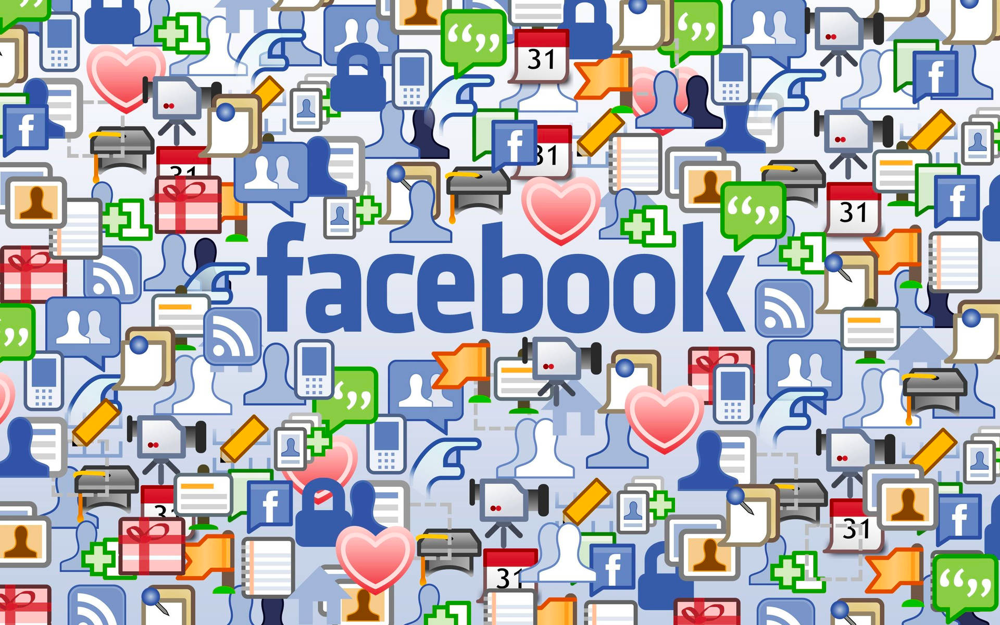

What is Facebook ?
Since its creation in 2004, Facebook has become the world's largest social network, with over 2.9 billion monthly active users worldwide. But what are the key numbers that make Facebook a major player on the internet ?
Firstly, Facebook is used by a wide variety of people, of all ages and backgrounds. In fact, over 60% of Facebook users are between 18 and 44 years old, while those over 65 represent around 6% of all users. Additionally, Facebook is also used by businesses, organizations, and public figures, with over 200 million active Facebook pages.
The time spent on Facebook is also impressive. On average, users spend 19.5 hours per month on the social network, which equates to around 38 minutes per day. Furthermore, Facebook users generate over 4 million likes every minute, showing the importance of social interaction on the platform.
In terms of revenue, Facebook is also a major player in the online advertising industry. In 2020, the company generated over $85 billion in revenue, primarily through advertising. Additionally, Facebook has invested heavily in research and development, with over $19 billion in expenses in 2020.
Finally, Facebook also plays an important role in the dissemination of information worldwide. In fact, nearly 44% of American adults get news through Facebook. However, the platform has also been criticized for its responsibility in spreading false information and conspiracy theories.
In conclusion, Facebook is a major player on the internet, with impressive numbers in terms of users, time spent on the platform, revenue, and dissemination of information. However, the platform also faces challenges in terms of privacy protection, regulation, and responsibility in the spread of information.